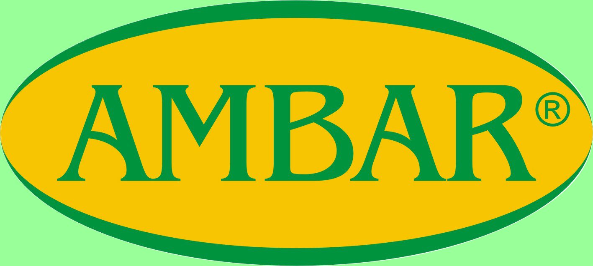
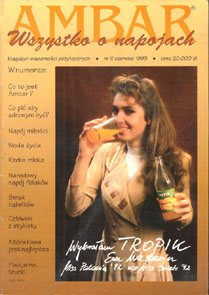
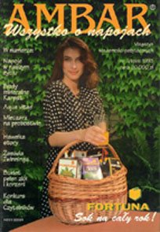
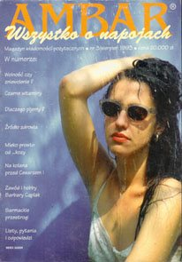

O nas
Rodzinna firma z Brzezia, która od 36 lat zaopatruje branżę spożywczą
Agencja Promocyjno Handlowa AMBAR powstała 1 października 1990 roku jako firma rodzinna. Założył ją Tadeusz Wojtaszek, który wraz z synem Jarosławem rozpoczął wspólną działalność. 1 maja 1991 r. utworzono Firmę Handlowo Usługową ALDO, którą również prowadzą razem.

Znak towarowy AMBAR®
Ludzie
Firma, w której wszyscy czują się jak w rodzinie
W obu firmach pracują najbliżsi członkowie rodziny – żona Tadeusza Helena, córka Monika, wnuczka Monika Magdalena, żona Jarosława Agnieszka, kuzyni i kuzynki oraz ich dzieci. Łącznie około 10 osób. Tylko dwie osoby pracują spoza rodziny, ale czują się jak w rodzinie.
Tadeusz Wojtaszek
Założyciel AMBAR. Członek Honorowy Krajowej Izby Gospodarczej „Przemysł Spożywczy i Opakowań” oraz Polskiego Towarzystwa Magnezologicznego.
Jarosław Wojtaszek
Współwłaściciel AMBAR i ALDO. Członek Rady Nadzorczej Krajowej Izby Gospodarczej „Przemysł Spożywczy i Opakowań”.
Zdjęcia zespołu i siedziby: [do uzupełnienia]
Historia
- 1990
1 października powstaje Agencja Promocyjno Handlowa AMBAR – firma rodzinna założona przez Tadeusza Wojtaszka, który rozpoczął działalność wspólnie z synem Jarosławem.
- 1991
1 maja powstaje Firma Handlowo Usługowa ALDO, prowadzona wspólnie przez obu właścicieli.
- lata 90.
AMBAR wydaje pierwsze w Polsce czasopismo poświęcone napojom i organizuje seminaria we współpracy z Wydziałem Technologii Żywności Akademii Rolniczej w Krakowie.
- 1999
V Krakowskie Spotkanie Producentów Napojów – medal pamiątkowy AMBAR-u wykonuje prof. Marian Konieczny.
- 2009
Wprowadzamy napoje profilaktyczne dla pracowników i sportowców.
- 2015
25. rocznica działalności firmy AMBAR.
- 2026
36 lat na rynku – nadal rodzinnie, w Brzeziu koło Krakowa.
„Obce rzeczy wiedzieć dobrze jest – swoje obowiązek”Zygmunt Gloger
Skąd nazwa?
AMBAR – staropolski spichrz
Nazwę wzięliśmy z Encyklopedii staropolskiej Zygmunta Glogera (1900–1903). Ambar, inaczej imbar, w wielu stronach dawnej Polski oznaczał spichrz, skład. Wyraz pochodzi z perskiego, gdzie znaczył spichrz, skład okrętowy, i przez Turcję trafił do wielu języków europejskich. Zapomniany w ubiegłym wieku – odkryliśmy go na nowo, nawiązując do tradycji naszego pięknego języka.
Branża i społeczność
Działamy nie tylko handlowo



Pierwsze czasopismo o napojach
AMBAR był wydawcą pierwszego w Polsce czasopisma poświęconego napojom.
Seminaria o napojach
Organizowaliśmy seminaria we współpracy z Wydziałem Technologii Żywności Akademii Rolniczej w Krakowie, z udziałem m.in. prof. Tadeusza Tuszyńskiego i prof. Zofii Zachwiei.
Publikacje i ekspertyzy
Artykuły Tadeusza Wojtaszka o wodzie, wodach mineralnych i dodatkach do żywności oraz ekspertyzy wdrażania systemów jakości w branżach napojowej, winiarskiej, owocowo-warzywnej i spirytusowej.
Pochód 100 Mikołajów
Organizator corocznej akcji „Pochód 100 Mikołajów” w Krakowie, łączącej promocję produktów z pomocą wybranym domom dziecka.
Członkostwa i współpraca
Należymy do
Krajowa Izba Gospodarcza „Przemysł Spożywczy i Opakowań”
Tadeusz Wojtaszek – Członek Honorowy Izby; Jarosław Wojtaszek – członek Rady Nadzorczej.
Polskie Towarzystwo Magnezologiczne im. prof. Juliana Aleksandrowicza
Tadeusz Wojtaszek – Członek Honorowy Towarzystwa. ptmag.pl
Współpracujemy z czasopismami
- Agro Przemysł
- Aura
- Bezpieczeństwo i Higiena Żywności
- Przemysł Fermentacyjny i Owocowo-Warzywny
- Przemysł Spożywczy
- Przegląd Piekarski i Cukierniczy
- Zdrowa Żywność i Zdrowy Styl Życia

List gratulacyjny KIG „Przemysł Spożywczy” z okazji 15-lecia firmy (Warszawa, 6 grudnia 2005 r.)
Zapraszamy do współpracy
Zakłady produkcyjne, gastronomię i konsumentów indywidualnych. Jesteśmy gotowi spełnić, w miarę naszych możliwości, każde życzenie odbiorców.